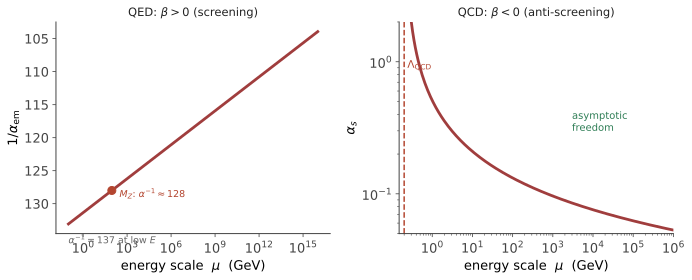

本页目录
场论 III · 路径积分与重整化
对标：Peskin & Schroeder §9–12 / Srednicki / Weinberg I §12 ｜ 前置：qft-01/02、aqm-03（路径积分）、asm-03（RG——本页是它的动量空间孪生） 场论收官：路径积分（现代场论的官方语言）与重整化（把正规化后的参数依赖组织成可比较的物理预测）。发散通常提示裸表达式、极限操作、对称性实现或有效理论边界需要被重新组织；“理论假装适用到无穷高能”只是其中一种 EFT 诊断，不能解释所有发散。
学习层：把 cutoff、scheme 和 observable 分开记账
1. 一个明确标注的 logarithmic toy ledger
实验只使用下面这条教学账本，不声称它是完整 QED、QCD 或 \(\phi^4\) 圈图计算：
这里 \(\Lambda\) 是 regulator（动量 cutoff），\(\mu\) 是 renormalization scale，\(g_{\rm bare}\) 是依赖 regulator 的参数，\(O\) 才是 toy physical observable。先固定 \(g_{\rm bare}\)，把 \(\Lambda\) 从 \(\mu\) 增大，\(O\) 会随对数项改变；这不是“测到的物理量依赖仪器 cutoff”，而是一个没有施加 renormalization condition 的不完整账本。
在 \(\mu\) 处施加条件 \(O_R(\mu)=g_R(\mu)\)，并定义
代回后，loop log 与 counterterm 逐项抵消，\(O(\Lambda)=g_R(\mu)\)。这展示的是 toy 的 cancellation；真实理论还要说明对称性、scheme、所有参数和高阶余项。改变 scheme 可以改变 \(g_R\) 的有限部分和 beta 的高阶表示，但不能把 regulator 当成 observable。
静态 fallback：取 \(\beta=0.2,\mu=1,g_R=0.8\)，并列固定 bare 与施加条件后的两本账。固定 bare 取 \(g_{\rm bare}=0.8\)，所以第一行 \(\Lambda=\mu\) 恰好对齐。
| \(\Lambda\) | \(\beta\log(\Lambda/\mu)\) | fixed bare 的 \(O(\Lambda)\) | counterterm \(\delta g\) | tuned bare | cancellation 后 \(O\) |
|---|---|---|---|---|---|
| 1 | 0 | 0.800000 | 0 | 0.800000 | 0.800000 |
| 2 | 0.138629 | 0.938629 | -0.138629 | 0.661371 | 0.800000 |
| 4 | 0.277259 | 1.077259 | -0.277259 | 0.522741 | 0.800000 |
| 8 | 0.415888 | 1.215888 | -0.415888 | 0.384112 | 0.800000 |
2. 一圈 running coupling：符号和极点只属于 toy
第二个模式使用另一个明确标注的 one-loop toy beta function
若 \(b>0\)，沿 UV 方向 \(\mu/\mu_0\) 增大时，\(g\) 增大，toy 极点在 \(\log(\mu/\mu_0)=1/[b g(\mu_0)]\)；若 \(b<0\)，UV 方向的耦合减小，而同一形式的极点落在 IR 方向。分母为零只是这条一圈 toy 解的边界：接近它时微扰展开失去可信度，不能把极点直接当作可观测粒子或完整理论的定理。
3. 静态证书、边界与迁移
- regulator 规定如何暂时控制表达式（这里是 \(\Lambda\)）；renormalization scheme 规定有限部分如何定义参数（例如在 \(\mu\) 的 subtraction condition）；physical observable 是施加条件后比较的量；EFT validity 是能标远离未知高能结构、截断误差仍可控的范围。四者不能互换。
- 一圈 beta 的符号能说明这个 toy 的局部 running 方向；它不独自证明完整 QED/QCD 的所有阈值、scheme 或非微扰现象。
- \(\Lambda_{\rm QCD}\) 附近的耦合变强只说明微扰 QCD 失效，需要非微扰方法；它不等于“从一圈发散直接证明禁闭”。
- counterterm cancellation 依赖已经写出的 renormalization condition；没有条件时，固定 bare 的 cutoff 扫描只是暴露未完成的参数重定义。
- 迁移到 QED、QCD 或 \(\phi^4\) 时，先列 regulator、scheme、对称性和可观测量，再检查 beta 的阶数、阈值和 EFT 误差。不要把这个 toy 的 \(b g^2\) 解读成完整模型的数值预测。
无 JavaScript 时的静态读法：账本模式取上表参数；running 模式取 \(g(\mu_0)=0.25\)，\(b=+0.5\) 或 \(b=-0.5\)，在 \(\ell=\log(\mu/\mu_0)\) 上观察分母和极点方向。预测门先问固定 bare、counterterm 和 beta 符号；提交后才显示 SVG、逐项账本、极点边界和迁移提示。图形是有限 toy 曲线，不是完整 QED/QCD 计算。

1. 场的路径积分
aqm-03 的公式升维（对场的一切历史求和）：
生成泛函 \(Z[J]=\int\mathcal D\phi\,e^{iS+i\int J\phi}\)，对源求泛函导数产出一切关联函数。
自由场的高斯积分【完整推导】：\(S_0=\int d^4x\,\tfrac12\left[(\partial\phi)^2-m^2\phi^2\right] = -\tfrac12\int\phi(\partial^2+m^2)\phi\)。无限维高斯配方（把 \(\phi\to\phi+\Delta_F J\)）给
\(\Delta_F\) 即 Feynman 传播子。两次求导即得两点函数，四次求导自动产生三项配对——Wick 定理由此一行证出（配对即高斯积分的矩公式）。
\(\ln Z\) 生成连通图：这与概率论中"矩母函数的对数生成累积量"逐字同构（🔗 sm-02）。\(Z[J]\) 就是场论的 MGF。
Wick 转动：\(t\to-i\tau\) 使 \(e^{iS}\to e^{-S_E}\)——得到统计力学的配分函数。\(S_E\) 就是 asm-01 的 Ginzburg–Landau 自由能泛函。qft 与临界现象是同一数学的两个读法，这也是本页与 asm-03 互为镜像的根源；格点 QCD 正是这条欧氏积分的蒙卡实现（🔗 comp-01）。
规范场的量子化：规范冗余使 \(\mathcal D A\) 重复计数，需 Faddeev–Popov 手续，代价是引入鬼场【引用】。
2. 发散从哪来：单圈的解剖
以 \(\phi^4\) 的四点函数单圈修正（"鱼"图）为例：
大 \(\ell\) 时被积函数 \(\sim1/\ell^4\)，而测度 \(d^4\ell\sim\ell^3d\ell\) → \(\int d\ell/\ell\)：对数紫外发散。
病灶的物理定位：\(\ell\to\infty\) 即短距离。发散意味着"我们假装这个理论一直适用到零距离"——这个假设本身才是错的。
正规化（先给积分立规矩，发散被参数化而非消失）：
- 动量截断 \(\Lambda\)：物理直观，但通常不显式保持规范不变性，需要额外的对称性恢复/匹配处理；
- 维数正规化 \(d=4-\epsilon\)：在合适的规范保持实现、反常已处理且 counterterm 保持相关对称性的前提下，通常能保留规范对称结构，发散显为 \(1/\epsilon\) 极点。这是常用工具，不是无条件的对称性保证【引用】。
3. 重整化：三步操作
① 承认裸参数不可观测。 拉氏量中的 \(m_0,\lambda_0\) 是形式记号，实验测不到它们。
② 用实验定义物理参数：例如在某个动量点 \(s_0\) 定义 \(\lambda_R \equiv -\mathcal M(s_0)\)。
③ 消去裸参数。 把 \(\lambda_0\) 用 \(\lambda_R\) 表达后代回，得到
在这个已经施加 renormalization condition 的 toy/阶次里，\(\Lambda\)（或 \(1/\epsilon\)）从所写的物理量表达式中消失——用物理量表达物理量，发散逐阶相消。这不是对任意裸表达式的自动删除，而是参数定义、对称性和阶次组织共同给出的结果。
power-counting 判据：耦合的质量量纲 \(\ge0\) 是判断微扰可重整性的必要框架（在给定维数和局域展开下组织 counterterm），不是脱离其它结构的充分定理。四维中 \([\lambda_{\phi^4}]=0\)、\([\lambda_{\phi^6}]=-2\)、\([G_N]=-2\)；还要检查规范/全局对称性、允许的 counterterm、反常、幺正性与其它一致性条件。不能仅凭三组量纲就概括完整 QED、QCD 或标准模型的全部 UV 行为。
4. 跑动耦合与重整化群
物理耦合依赖定义能标 \(\mu\)，其变化率即 \(\beta\) 函数：
这是 asm-03 的 RG 流在动量空间的孪生：粗粒化 ⟺ 降能标；不动点、相关/无关方向逐字对应。
两大剧本：
- QED：在常用约定下电子真空极化给出正的 beta 贡献，体现屏蔽与 UV 增长。单电子的一圈 toy 公式只能展示方向；从 \(1/137\) 到约 \(1/128\) 的精确比较还要包含所有在相关能标活跃的带电自由度、阈值匹配、scheme 和更高阶修正，不能由该一项独自声称得到。
- QCD：\(\beta<0\) 的微扰 UV 系数（胶子自相互作用产生反屏蔽）给出渐近自由。接近 \(\Lambda_{\rm QCD}\) 时耦合变强、微扰论失效；禁闭是需要非微扰动力学与证据的独立结论，不是从一圈 running 的发散直接推出。
5. Wilson 的和解：有效理论
现代读法：一切场论都是有效理论。高能自由度被积掉后，其影响以两种形式留存——跑动的参数，以及被 \((E/\Lambda)^n\) 压低的无关算符。
这与 asm-03"低能不必知道高能细节"是同一句话的两种说法。
后果："不可重整"不再是死刑，而是"有效范围有限"的标签。广义相对论作为有效场论在低能完全可用，只在接近 Planck 能标时失效——这正是量子引力问题的精确表述（本站第三档边界，如实标注）。
6. 练习与要点
例 1（power-counting 分类） 四维中由 \([\mathcal L]=4\) 反推：\(\phi^4\) 属于 power-counting 可重整类，\(\phi^6\) 与引力属于负质量量纲类；完整结论仍要检查对称性、反常和 counterterm 结构。一分钟的量纲体操，给出二十世纪两大结论的入口。
例 2（跑动的数值体感） 单电子一圈 toy：\(\alpha(\mu)=\dfrac{\alpha_0}{1-\frac{2\alpha_0}{3\pi}\ln(\mu/m_e)}\)。它能展示正 beta 的方向和对数增长；代入 \(\mu=M_Z\) 不能单独当作 \(1/137\to1/128\) 的精确推导，因为还缺阈值、其它带电自由度、scheme 与高阶项。"常数不常"的结构体感。
例 3（Landau 极点是 toy 的边界） 上式分母归零处 \(\alpha\to\infty\)；若把单电子、单圈公式极端外推，常会得到约 \(10^{286}\) eV 的数量级。这个数字只能标为极粗示意，远非可观测预言；它提示该外推失去可信度，而不证明完整 QED 在某个可测能标真的有极点。重整化群给出的是一份带适用域的体检报告。\(\blacksquare\)
下一门：凝聚态理论两页——二次量子化把"多电子"变成"场"，BCS 让电子结对超导：qft 的语法在固体里的第二人生。